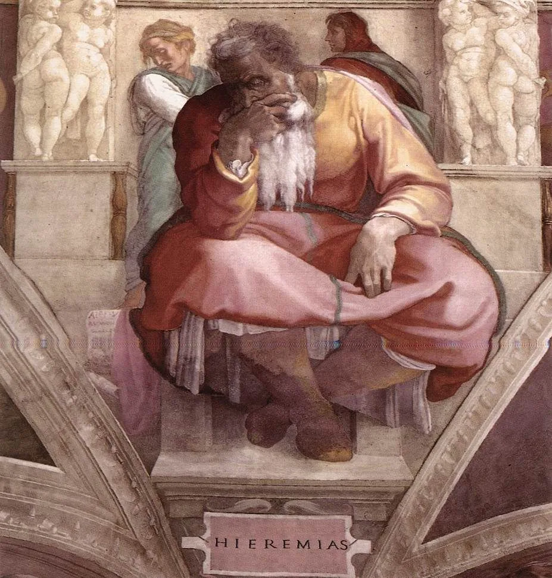
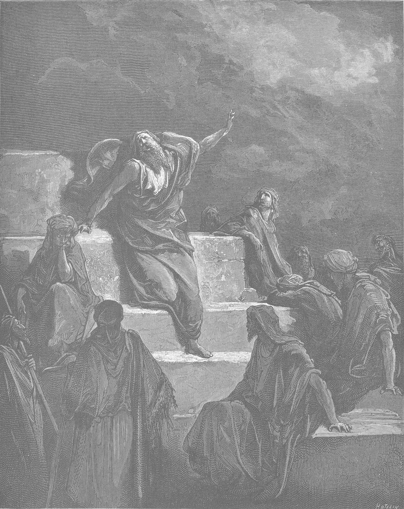
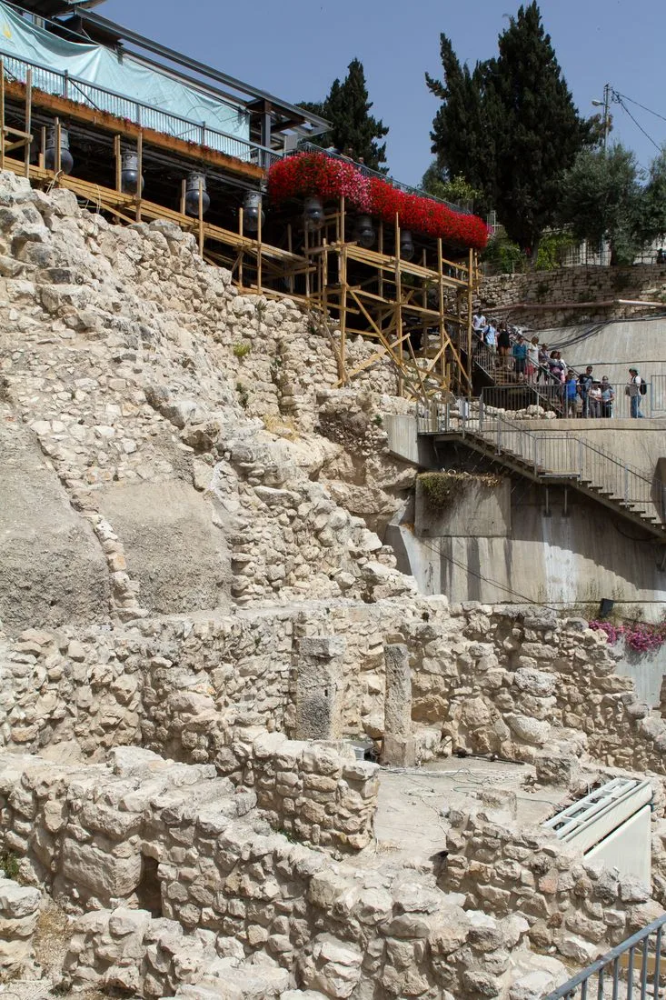
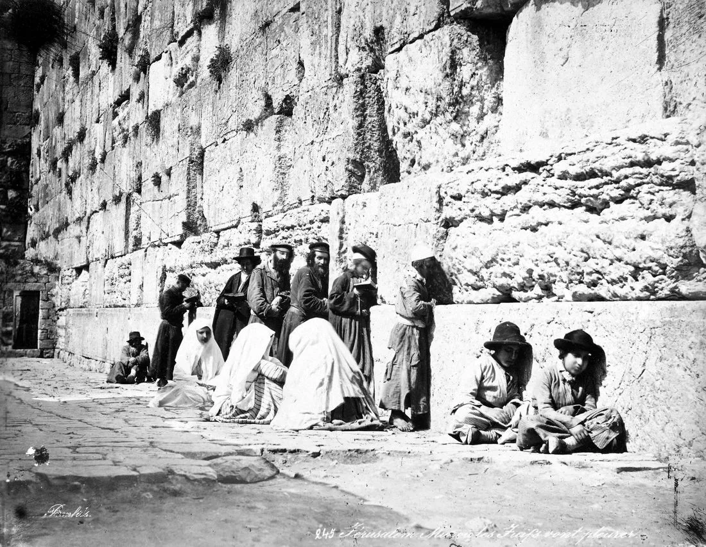

Israel, Covenant & Prophets · Grades 6–12 · 50–60 minutes
Lamentations
How can faith make room for grief that remains unresolved?
Five poems mourn Jerusalem’s destruction in 587/586 BCE. Voices shift between the ruined city, a suffering individual, and the community.
Begin the investigation →Where this book fits

- Covenant
- Kingdom
- Prophetic warning
- Exile
- Restoration
Five poems mourn Jerusalem’s destruction in 587/586 BCE. Voices shift between the ruined city, a suffering individual, and the community. Before these events, Israel’s covenant calls for loyalty to God and care for neighbors. These books connect the failures of leaders and communities with judgment, grief, and the hope of restoration.
Today’s goals: trace the book’s movement; explain one image using its passage; distinguish the text’s claim from a later interpretation.
“Major” refers to the relative length of this group’s books, not a ranking of prophets’ importance. Christian Bibles commonly group Isaiah, Jeremiah, Lamentations, Ezekiel, and Daniel here. Jewish Bibles organize these books differently.
Follow the voice without rushing the ending
Read Lamentations 3:19–24 beside 5:19–22. What relationship between hope and grief fits both passages?
Choose a prediction, then compare it with the passage.
Visual Reading Guide · Lamentations 1:1
Visualizing grief in historical art
Read Lamentations 1:1–11 before examining Doré's engraving. How does the nineteenth-century French artist translate the ancient Hebrew acrostic poetry into a landscape of catastrophic ruin?

Trace the whole book
Choose a section, read the linked passage in your Bible, and answer with a verse. Summaries are teaching paraphrases, not Scripture quotations.
Reading lenses and teacher context
Lamentations is a book, not another prophet’s name. It is traditionally associated with Jeremiah, but the Hebrew text does not name its author. Chapters 1–4 use alphabetic acrostic patterns; chapter 3 has 66 verses, with three successive verses per letter. Chapter 5 has 22 verses but is not an alphabetic acrostic. The final prayer remains unresolved.
Primary Historical Evidence
Archaeology and memory of the 586 BCE destruction of Jerusalem
Lamentations is not an abstract meditation on suffering; it is an eyewitness poetic response to the physical destruction of Jerusalem, the royal palace, and Solomon's Temple by Nebuchadnezzar's army in the summer of 586 BCE (2 Kings 25:8–12). Physical archaeology and historical memory attest to the reality of the crisis.


Check your reading
Explain with evidence
Choose an image or action from this book. What does the passage show? What does it explain? What does your reading add? Include a verse reference and connect your explanation to the big question.
Notes save in this browser as you write.
Read and continue
USCCB: Lamentations introduction and reading notes · Kingdoms, Prophets & Exile
Teacher plan · 50–60 minutes
5 minutes: locate the book in the story. 10 minutes: predict, read, and compare. 20 minutes: assign reading sections to pairs and build a whole-book explanation. 10 minutes: check answers and discuss evidence. 10 minutes: write an explanation. For younger readers, use the first passage and explain the image orally. For extension, compare two translations and distinguish textual observations from interpretive claims. Let students discuss textual grief without requiring personal disclosures.
Historical timeline
Scroll sideways, or focus the timeline and use the left and right arrow keys.
Earlier deportation
Babylon removes King Jehoiachin and many leaders.
Jerusalem besieged
Famine and warfare devastate the city.
Temple destroyed
Lament gives voice to loss, confession, and anguish.
Hope remembered
The poems appeal to God’s compassion and faithfulness.